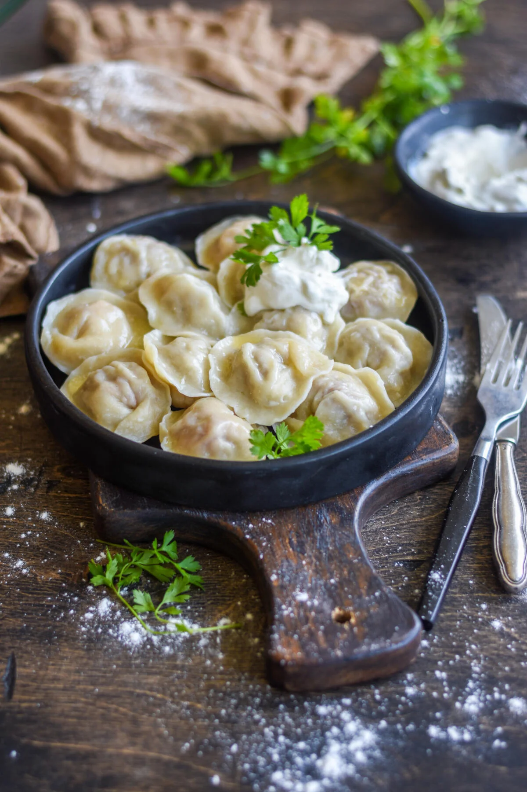

Pelmeni

Description
Pelmeni are traditional Russian dumplings, consisting of a savory meat filling wrapped in thin, unleavened dough. Often considered the heart of Russian comfort food, these bite-sized delights are typically boiled and served with a dollop of sour cream (smetana), butter, vinegar, or broth. Making them from scratch is a rewarding, often communal, activity.
Ingredients
- All-purpose flour (for dough)
- Water & Salt (for dough)
- Ground meat (beef/pork mix recommended)
- Onion, finely chopped (for filling)
- Salt & Pepper (for filling seasoning)
Steps
- Make the Dough: In a bowl, mix flour, water, and a pinch of salt. Knead on a lightly floured surface until the dough becomes smooth and elastic (about 5-10 minutes). Cover with plastic wrap or a damp cloth and let it rest for at least 30 minutes.
- Prepare the Filling: While the dough rests, combine the ground meat (beef/pork mix is classic), finely chopped onion, salt, and pepper in a separate bowl. Mix thoroughly until well combined.
- Assemble Pelmeni: Divide the rested dough into manageable portions. Roll out one portion very thinly on a floured surface. Use a small glass or round cutter (about 2 inches/5 cm) to cut out circles. Place about a teaspoon of the meat filling in the center of each dough circle. Fold the circle in half to form a crescent, pressing the edges firmly to seal. Then, bring the two corners of the crescent together and pinch them to create the characteristic pelmeni shape. Repeat with remaining dough and filling. Place formed pelmeni on a floured board or baking sheet, ensuring they don't touch.
- Cook: Bring a large pot of salted water to a rolling boil. You can add a bay leaf or peppercorns for extra flavor. Carefully add the pelmeni (cook in batches if necessary to avoid overcrowding). Once they float to the surface (after a few minutes), continue boiling for another 5-7 minutes, or until the filling is cooked through.
- Serve: Use a slotted spoon to remove the cooked pelmeni from the pot, allowing excess water to drain. Serve immediately.
- Enjoy: The most common way to enjoy pelmeni is with a generous dollop of sour cream (smetana) or a knob of melted butter. Some also like them with a splash of vinegar or served in the cooking broth.
Home